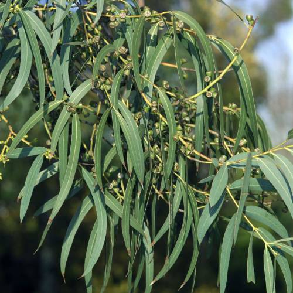

Ayuntamiento de Senés
JARDIN BOTANICO DE ESPECIES AUTOCTONAS DE SENES

Eucalyptus globulus

El eucalipto (Eucalyptus globulus) es un árbol perennifolio de rápido crecimiento originario de Australia, ampliamente introducido en diferentes regiones del mundo, incluida la zona mediterránea.
Se caracteriza por su gran altura, su tronco recto y su corteza que se desprende en tiras, mostrando tonalidades claras y grisáceas. Sus hojas son alargadas, de color verde azulado, y desprenden un aroma intenso debido a la presencia de aceites esenciales.
Es una especie que puede formar masas forestales densas y que destaca por su crecimiento rápido y su capacidad de adaptación a distintos tipos de suelo.
El eucalipto es originario de Australia, pero ha sido introducido en muchas partes del mundo. En la región mediterránea se encuentra en zonas cultivadas o repobladas.
En el entorno de Senés, su presencia es menos frecuente que la de especies autóctonas, aunque puede aparecer en plantaciones o zonas concretas.
Prefiere suelos profundos y cierta disponibilidad de agua, aunque puede adaptarse a diferentes condiciones.
El eucalipto es conocido por sus propiedades medicinales, especialmente por sus aceites esenciales con efectos expectorantes y antisépticos.
Se utiliza en infusiones, inhalaciones y productos farmacéuticos relacionados con el sistema respiratorio.
También tiene aplicaciones en la industria maderera y papelera debido a su rápido crecimiento.
El eucalipto simboliza la renovación y la purificación, debido a su aroma y sus propiedades medicinales.
También representa la adaptación y la expansión, al haber sido introducido en numerosos territorios.
En Senés, el eucalipto nace de forma espontanea en toda la parte baja y media de la jurisdicción. los agricultores no los quieren ya que sus raices son muy dañinas y los despojos de sus ramas, flores y hojas impiden que germinen las semillas de otras plantas cercanas, convirtiendola en tierra improductiva..
Las propiedades curativas de esta planta son excelentes, es ant-inflamatoria y expectorante, se utiliza en resfriados, gripe y todas las congestiones de las vías respiratorias.
Las hojas se hierben en la habitación, se aspiran los humos por boca y nariz, se apaga el fuego y cerrando la puerta se sugue respitanto dichos humos, siendo uno de los mejores métodos para descongestionarse.
El eucalipto puede florecer en diferentes épocas del año según las condiciones climáticas, produciendo pequeñas flores blanquecinas.
El eucalipto es una de las especies de crecimiento más rápido del mundo.
Sus hojas contienen aceites esenciales muy utilizados en medicina y aromaterapia.
Es una especie que puede influir en el entorno debido a su consumo de agua y su capacidad de expansión.